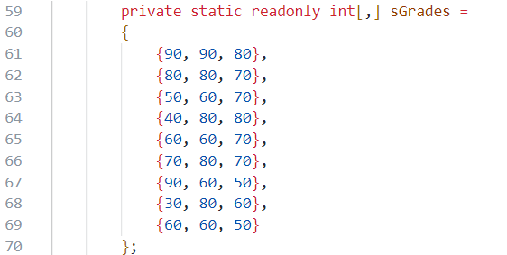

| 班級 | 姓名 | 學號 | 日期 |
|---|---|---|---|
| 四機械四乙 | 吳宇昕 | B10831020 | 12/20/2022 |
sorce code and replit
終端機輸出
計算最長距離
題目給7個點的x,y座標，求最遠兩點的距離。求解過程如下：
心得
計算歐式距離需要開根號，耗費較多計算資源，應盡可能降低開根號次數。若要計算每一個點與其他6個點之間的距離，須至少開C(7,2)次根號。但是可以確定最大距離一定發生在四個邊界點之間，只需要計算四個邊界點兩兩之間的距離，開C(4,2)次根號就夠了。若題目加入更多點的座標，不會增加開根號次數。
尋找四個邊界點所需的時間會隨題目的點數增加而線性上升，比起指數型上升是相當大的改善。
或許這個題目還有更好的解法，進一步減少計算成本，目前這是我想到最好的做法。
sorce code and replit
終端機輸出

心得
C#有個很好用的關鍵字readonly，讓一個class attribute的值經初始化後便改為唯讀，不可變更。這比C++的const關鍵字好用，因為一個const member沒辦法初始化賦值。
C#好像不讓我們把的class member設為const，若要一個class member值固定不變，必須用readonly。因此這題我把學生的成績設為readonly int[,]，放在class Program裡面。

sorce code main.cs Deck.cs Card.cs Player.cs and replit
三份cs檔分別包含class Program、class Deck、class card及class Player，皆屬於namespace Q5
終端機輸出

namespace Q5
{
class Card
{
public readonly static string[] sSuit = {"berry", "flower", "diamond", "heart"};
public readonly static string[] sNumber = {"A", "2", "3", "4", "5", "6", "7", "8", "9", "10", "J", "Q", "K"};
public readonly int SuitIdx;
public readonly int NumberIdx;
public Card(int _suitIdx, int _numberIdx)
{
this.SuitIdx = _suitIdx;
this.NumberIdx = _numberIdx;
}
}
}
每張牌都有一個花色與一個數值，兩者都應該是string。然而，過去似乎聽說string是指向heap的char pointer，在程式裡生成過多string容易使記憶體零散。因此，每張牌的花色與數值欄位我並沒有用string的方式儲存，而是以int儲存，作為索引另外兩個static string array sSuit與sNumber的索引值。如此一來，每個card instance只佔據記憶體連續的16個byte。
不知道這樣做是否真的可以提升程式效能，減少記憶體零散，或是只是我自找麻煩？
這個寫法犧牲一些程式可讀性，印出一張牌的程式如此一來必須寫成這樣
Card c = new Card(2, 10);
Console.WriteLine($"{Card.sNumber{c.NumberIdx}--Card.sSuit{c.SuitIdx}}");
// Actual output
// Diamond--J
而不是這樣
Card c = new Card(2, 10);
Console.WriteLine($"{c.Number}--{c.Suit}");
// Desired output
// Diamond--J
含有一個長度52的Card陣列this.AllCards，代表整副牌的所有卡片。
Shuffle方法
打亂this.AllCards陣列各元素的順序。隨機取陣列中的兩張牌，互換位置52次。
public void Shuffle : Deck()
{
this.shuffledFlag = true;
Random rnd = new Random();
for(int i = 0; i < 52; i++){
int card1Idx = rnd.Next() % 52;
int card2Idx = rnd.Next() % 52;
// swapping the loactions of two cards
Card tmp = this.AllCards[card1Idx];
this.AllCards[card1Idx] = this.AllCards[card2Idx];
this.AllCards[card2Idx] = tmp;
}
}
或許其實洗牌不需要互換那麼多次，整副牌的順序就會夠亂了?
Deal方法
發牌的方法this.Deal pass by reference輸入一個玩家陣列，發兩張牌給每位玩家。每個Deck instance都會用一個int this.lastGivenCardIdx記錄自己this.AllCards陣列發到第幾張牌了，避免一張牌在不同次發牌間重複出現。
public void Deal(ref Player[] _players, int nCardsEachPerson = 2)
{
Card[] cardsGivenToAPlayer = new Card[nCardsEachPerson];
for (int i = 0; i < _players.GetLength(0); i++) {
for (int j = 0; j < nCardsEachPerson; j++){
cardsGivenToAPlayer[j] = this.AllCards[this.lastGivenCardIdx];
this.lastGivenCardIdx++; // keeps track of which card in array this.AllCards has been given out
}
_players[i].ReceiveCards(cardsGivenToAPlayer);
}
}
這個發牌的方法在牌發完的時候會產生index out of range exception，玩家人數或每個人拿到的排數量太多時會出問題。
每個Player instance只有一個attribute，是List<Card>，代表該玩家的手牌。除此之外，Player class也定義了一些method，例如ReceiveCard、ShowCard等等，代表玩家可能做的事。還有一個static method AllPlayersShowCards，輸入一個玩家陣列，顯示所有玩家的手牌。
心得
C#確實比C++好寫很多。唯一比較想抱怨的，是它不太讓我們把物件存在stack上，而且所有物件都需要一個個初始化。像是我的Player陣列：
Player players = new Player[3];
這樣寫只有初始化陣列本身，而沒有初始化到陣列裡的player instance。要走訪這個陣列，初始化一個個player instance，甚至不能用foreach loop。這樣寫行不通
foreach(Player p in players){
p = new Player();
// p is a foreach loop variable, cannot be reassigned
// or initialized
}
必須用傳統的for loop，寫成這樣:
for(int i = 0; i < players.GetLength(0); i++){
players[i] = new Player();
}
創建instance的程式碼比C++ stack-allocate物件複雜，但這恐怕是在C#或Java都無法避免的。
使用Q5的程式碼測試vscode intellisense跟debugging功能。使用dotnet sdk 7.0，建置vscode開發環境。
C#每個物件都需要用new關鍵字初始化。下圖是我創建了一個Player陣列，稱為player，卻沒有使用new初始化陣列本身。當我試圖把這個陣列拿來用，傳進別的method時，vscode intellicense在compile time就劃紅線顯示錯誤訊息，告訴我這個陣列尚未初始化。
雖然不太清楚為甚麼錯誤訊息是說Use of unassigned local variable而不是uninitialized local variable。

第10行加上new關鍵字後，紅線就消失，可以編譯了。
Player[] players = new Player[3];
剛才的player陣列本身加上new關鍵字以後成功初始化了，但是裡面的元素，一個個Player instance沒有初始化，造成NullReference Exception

查看vscode debug工具列裡面的local variable watch視窗，可以看到陣列本身存在，但是裡面的三個元素還是null

在別處用for loop走訪這個陣列，初始化每個元素後就解決了這個run time error。
for(int i = 0; i < 3; i++){
players[i] = new Player();
}
書裡有提到C# xml-style comment的功能，試著幫Q5的程式碼加上一些註解。

同一個C# project使用到這個method的地方，只要把游標移到函式名稱上方，就會依summery, output, parameter自動顯示xml comment的內容。

但是有點疑惑的是，它只有顯示出<summery></summery>的內容，其他像<para name></para name>裡的，都沒有顯示出來。不知道我是哪裡做錯了，還是有什麼vscode套件的問題。
vscode的intellisense非常人性化，可以自己用xml語法控制註解內容真是一大福音。加上精心設計task.json跟launch.json的內容，f5一按下去就自動編譯並開始偵錯程式，一切流程自動化太方便了。
更棒的是，vscode免費。